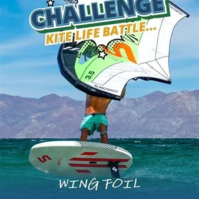

da mer 7 ott a dom 22 nov
Challenge Kite Life Battle 2026
La Challenge Kite Life Battle 2026 è l'avvincente competizione in remoto organizzata dall'associazione sportiva Kite Life FVG, che si svolge dal 7 ottobre al 22 novembre 2026 nelle acque di Marina Julia e in altre località del Friuli Venezia Giulia. Il popolo del Wing è chiamato…
 Indicazioni
Indicazioni
- Costi e prenotazioni
- Costo non indicato · Prenotazione non indicata
- Programma
- Programma da verificare. Apri la fonte ufficiale per orari e possibili aggiornamenti.
- In caso di maltempo
- Nessuna indicazione specifica pubblicata.
- Note
- Acquisito automaticamente dalla fonte.
L’EVENTO
Descrizione completa
La Challenge Kite Life Battle 2026 TgQPHd|||[] è l'avvincente competizione in remoto organizzata dall'associazione sportiva Kite Life FVG, che si svolge dal 7 ottobre al 22 novembre 2026 nelle acque di Marina Julia e in altre località del Friuli Venezia Giulia.
Il popolo del Wing è chiamato a raccolta! È il momento di pompare, staccare e far valere ogni singolo chilometro!
La “Kite Life Battle” si gioca in remoto: registra le tue sessioni negli spot del Friuli Venezia Giulia con l'APP gratuita Surf o con il tuo smartwatch e condividi i risultati il giorno stesso sul gruppo WhatsApp dedicato!
Le sfide in gara:
- distanza in 1 ora
- Top 3 Maschile & Top 3 Femminile (limite max 1 ora di sessione!)
- sfida a tempo A/R da Marina Julia al Faro Rosso di Punta Sdobba! (Trofeo "Mario Quarina").
Sono previsti premi speciali ad estrazione per tutti i partecipanti con almeno una traccia registrata!
Le premiazioni ufficiali si terranno alla cena sociale dell'associazione Kite Life FVG, in programma il 27 novembre
Per iscriversi basta compilare il modulo sulle pagine social dell'associazione oppure chiamare il numero +39 349 3631520 (Giovanni).
L'iscrizione è riservata ai tesserati Kite Life FVG nel 2026.
IL PROGRAMMA
Programma e orari
Appuntamenti raccolti dalle fonti elencate. Dove manca un orario, non è ancora disponibile in questa scheda.
Programma pubblicato
- Dal 2026-10-07 al 2026-11-22
INFORMAZIONI UTILI
Prima di partire
- Controllare la fonte prima di partire.
ORGANIZZAZIONE